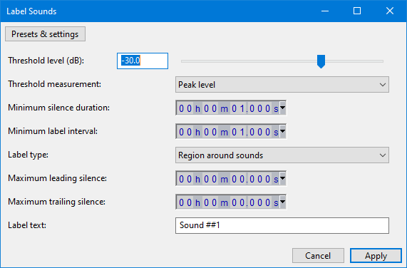
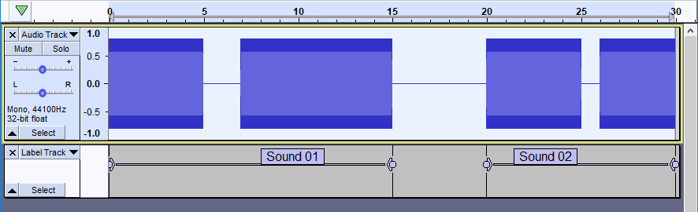
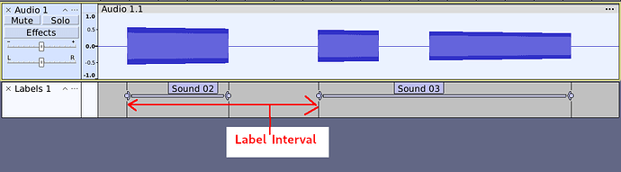
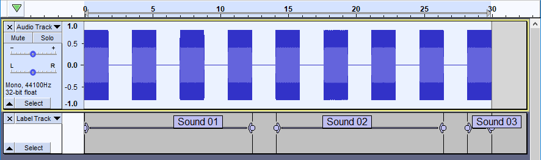
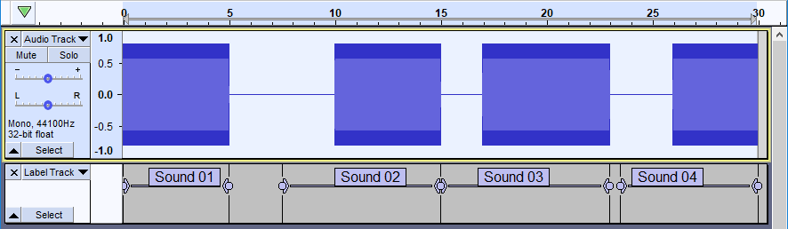
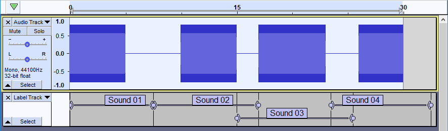
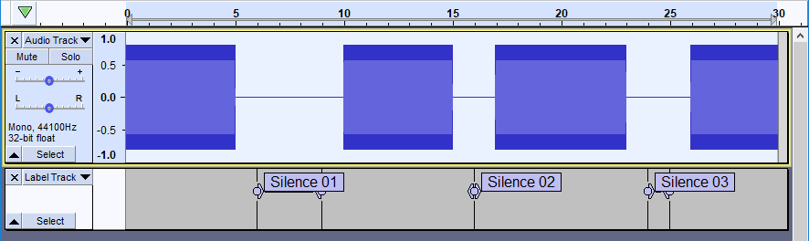

Label Sounds
It replaces Sound Finder and Silence Finder
- Accessed by:
- 
Label Sounds detects the audio level in the selected track(s). When the track level exceeds a specified threshold level, the audio is considered to be "sound", and when below the level it is considered to be "silence".
There are options to add point labels before or after each detected sound, region labels around each sound, or region labels between each sound (effectively labeling the silences).
Normally the effect would be applied to a single track. If multiple tracks are selected, each track is processed in turn and all of the labels will be produced in a single label track.
| "Label Sounds" is intentionally limited to a maximum of 10000 labels. In the unlikely event that you need to create more labels, process the track in sections, but be aware that Audacity may become sluggish with a very large number of labels. |
Controls:
- Threshold level (dB): (default -30 dB)
- When audio is below this level, it is considered to be 'silence'. The lower (more negative) this setting, the quieter the background level must be to be recognized as "silent". If set below the track's noise floor level, the entire track will be seen as one continuous sound.
- Threshold measurement: (default "Peak level")
- Peak level: The threshold measurement is based on the peak amplitude in each 10ms period.
- Average level: The threshold is measured as the absolute average level for each 10 ms. This setting may help avoid labeling clicks in vinyl recording. Note that the average level will usually be lower than the peak level.
- RMS level: The threshold is measured as RMS level. Like the 'Average level' measurement, this is less likely to label clicks. RMS level may be measured with the 'Measure RMS' or 'Contrast' effects.
- Minimum silence duration: (default 1 second)
- When 'silence' of this duration (or longer) is found, preceding sound and following sound are considered to be separate sounds, provided that the previous sound is at least the 'Minimum sound duration'. Valid values are between 0.01 seconds to 1 hour. See examples below.
- Minimum label interval: (default 1 second)
- This is effectively the minimum length of a sound duration, it allows short sounds to be grouped within a label region. This ensures that labels will be at intervals of no less than this length. In effect this combines short sounds to create a group of sounds that is at least the specified length. Valid values are between 0.01 seconds to 2 hours. See examples below.
- Label type: (default: Region around sounds) Sounds / silences are labelled either with point labels or region labels.
- Point before sound This option places a point label before each detected sound or group of sounds.
- Point after sound This option places a point label after each detected sound or group of sounds.
- Region around sounds This option places a region label around each detected sound or group of sounds.
- Region between sounds This option places a region label between each detected sound or group of sounds. In effect this labels silent regions.
- Maximum leading silence: (default: 0 seconds)
- When labeling sounds, a point label, or the start of a region label will be placed before the beginning of the sound by up to this amount. If there is insufficient room to do so without overlapping a previous sound, this distance is automatically reduced. Labels will not be placed before time=0 and will not overlap previous sounds.
- When labeling the silent regions between sounds, a point label, or the start of a region label will be offset by this amount after the end of the previous sound. See examples below.
- Maximum trailing silence: (default 0 seconds)
- This setting is used by region labels only.
- When labeling sounds, the end of a region label will be placed this distance after the end of a sound, provided that there is room to do so before the next sound.
- When labeling the silent regions between sounds, the end of a region label will be placed this distance before the start of the next sound, provided there is room to do so. If the combined length of Maximum leading silence and Maximum trailing silence is longer than the space between the previous and next sounds, then a point label is created. See examples below.
- Label text: (default "Sound ##1")
- This is the text that will be entered in each label.
- The '#' symbol is a special 'placeholder' character for adding a counter. The number of successive '#' symbols determines the minimum number of digits to be displayed. The '#' symbols must be followed by an integer (whole) number, which sets the starting number. Example: ###3 will add a three digit counter that counts up: 003, 004, 005... for consecutive labels. A counter may be placed before, after or withing the label text, but only one counter may be used in a label.
Tips
- If the 'Threshold' is set too low, then 'silences' may be above the Threshold level, causing the 'silence' to be seen as a 'sound'.
- If the 'Threshold' is set too high, the beginning or end of sounds may be missed.
- If 'Minimum silence duration' is too short, there may be more labels than intended due to short gaps being seen as 'silence'.
- If 'Minimum silence duration' is too long, gaps between songs may not be seen.
- For vinyl recordings, 'Average' or 'RMS' measurement is recommended so as to reduce the chance of crackles registering as 'sounds'.
- When splitting a recording into separate tracks, it may be useful to set the Label text to Name of Album ##1 and then ues and selecting Multiple Files using it based on labels using the label names for file names.
Examples
Minimum Silence Duration
- Minimum Silence Duration: 4.000 seconds

- Observe that first and last silences are ignored because they are each less than 4 seconds. The middle silence is 5 seconds duration, so this is recognized as a gap between two sounds.
Minimum label interval
For clarity, this is what is meant by the "label interval", what is in effect the sound duration.
- 
- Minimum label interval: 10.000 seconds

- Observe that the first 4 sounds are grouped together, creating label "Sound 01" which is about 12.4 seconds long.
- The next label, "Sound 02" begins at the start of the next sound, and groups the next 4 sounds, with a label region of about 12.4 seconds.
- The final label, "Sound 03" begins at the start of the next sound, and ends at the end of the selection. This is exempt from the "10 second minimum" because it has reached the end of the selected audio.
Label type
- The first label track: Label type: Point before sound
- The second label track: Label type: Point after sound
- The third label track: Label type: Region around sounds
- The fourth label track: Label type: Region between sounds
Maximum leading / trailing silence
- Maximum leading silence: 2.5 seconds
- Maximum trailing silence: 0 seconds

- Observe that the first label "Sound 01" starts at the beginning of the track. Labels will not be created before time = 0.
- The second label, "Sound 02" begins 2.5 seconds before the start of the second sound.
- The third label,"Sound 03" would overlap the previous sound if it started 2.5 seconds before the start of the third sound, but overlapping the previous sound is disallowed. This label therefore starts as early as possible - at the end of the second sound.
- The final label, "Sound 04" has sufficient room to start 2.5 seconds before the start of the final sound.
- Maximum leading silence: 2.5 seconds
- Maximum trailing silence: 2.5 seconds

- Observe that labels can overlap other labels, but cannot overlap previous or following sounds.
- Notice also that the final label extends 2.5 seconds beyond the end of the final sound, even though it is beyond the end of the track.
- Maximum leading silence: 1 second
- Maximum trailing silence: 1 second
- Label type: Region between sounds
- Label text: Silence ##1

- Observe that the labels are between sounds
- The start of each label is 1 second after the previous sound
- The end of each label is 1 second before the next sound
- The second label, "Silence 02" is collapsed down to a point label